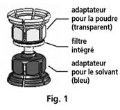
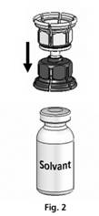
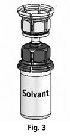
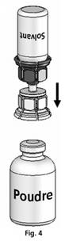
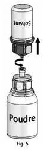
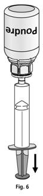
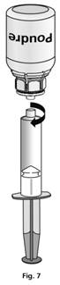

RÉSUMÉ DES CARACTÉRISTIQUES DU PRODUIT
ANSM - Mis à jour le : 20/03/2013
OCTANATE 50 UI/ml, poudre et solvant pour solution injectable
2. COMPOSITION QUALITATIVE ET QUANTITATIVE
Octanate 50 UI/ml contient soit 250 UI soit 500 UI de facteur VIII de coagulation humain par flacon.
Le produit contient approximativement 50 UI* par ml de facteur VIII de coagulation humain lorsqu'il est reconstitué avec le solvant fourni (5 ml pour le flacon de 250 UI et 10 ml pour le flacon de 500).
Le produit contient approximativement ≤ 30 UI/ml de facteur de Willebrand (vWF:RCo).
Ce médicament contient moins de 1 mmol de sodium (23 mg) par dose, c'est-à-dire qu'il est essentiellement sans sodium, pour le flacon de 250 UI et contient jusqu'à 1,75 mmol de sodium (40 mg) par dose pour le flacon de 500 UI. Cette information est à prendre en compte par les patients suivant un régime contrôlé en sodium.
Pour la liste complète des excipients, voir rubrique 6.1.
*L'activité (UI) est déterminée en utilisant le dosage chromogénique de la Pharmacopée Européenne. L'activité spécifique moyenne d'Octanate est ≥ 100 UI/mg protéine.
Poudre et solvant pour solution injectable.
La poudre est blanche ou jaune pâle sous forme d'un solide friable.
Le solvant est un liquide limpide, incolore.
4.1. Indications thérapeutiques
Traitement et prophylaxie des épisodes hémorragiques chez les patients atteints d'hémophilie A (déficit congénital en facteur VIII).
Cette préparation ne contient pas de facteur de Willebrand en quantité pharmacologiquement active et par conséquent n'est pas indiqué dans la maladie de Willebrand.
4.2. Posologie et mode d'administration
Posologie
Le dosage et la durée du traitement de substitution dépendent de la sévérité du déficit en facteur VIII, de la localisation et de l'importance de l'épisode hémorragique ainsi que de l'état clinique du patient.
Le nombre d'unités de facteur VIII administrées est exprimé en Unités Internationales (UI), ramenées au standard actuel de l'OMS pour les préparations de facteur VIII. L'activité coagulante du facteur VIII dans le plasma est exprimée soit en pourcentage (par rapport au plasma humain normal) soit en Unités Internationales (par rapport à un standard international du facteur VIII plasmatique).
Une Unité Internationale (UI) d'activité coagulante du facteur VIII correspond à la quantité de facteur VIII contenue dans un ml de plasma humain normal. Le calcul de la dose nécessaire de facteur VIII est basé sur le résultat empirique qu'une UI de facteur VIII par kg de poids corporel augmente l'activité coagulante du facteur VIII plasmatique de 1,5 % - 2 % de la normale. La posologie nécessaire est déterminée à l'aide de la formule suivante:
Unités nécessaires = poids corporel (kg) x augmentation souhaitée du taux de facteur VIII ( %) (UI/dl) x 0,5
La quantité à administrer et la fréquence d'administration doivent toujours être guidées par l'efficacité clinique individuelle.
Dans le cas des événements hémorragique suivants, l'activité coagulante du facteur VIII ne doit pas chuter en dessous du taux d'activité coagulante plasmatique indiqué (en % de la normale) pendant la durée mentionnée.
Le tableau ci-dessous peut être utilisé comme guide pour les posologies lors d'épisodes hémorragiques et de chirurgie:
|
Degré de l'hémorragie/Type d'intervention chirurgicale |
Taux de facteur FVIII nécessaire (%) |
Fréquence des doses (heures)/Durée de traitement (jours) |
|
|
Hémorragie |
|
||
|
Début d'hémarthrose, saignement musculaire ou buccal |
20 - 40 |
Renouveler toutes les 12 à 24 heures. Au moins 1 jour, jusqu'à ce que l'épisode hémorragique soit résolu comme indiqué par la douleur ou que la cicatrisation soit obtenue. |
|
|
Hémarthrose plus étendue, hémorragie musculaire ou hématome |
30 - 60 |
Renouveler la perfusion toutes les 12 à 24 heures pendant 3 à 4 jours ou plus jusqu'à ce que la douleur et le handicap disparaissent. |
|
|
Hémorragies mettant en jeu le pronostic vital |
60 - 100 |
Renouveler la perfusion toutes les 8 à 24 heures, jusqu'à disparition du risque vital. |
|
|
Chirurgie |
|
||
|
Mineure |
30 - 60 |
Toutes les 24 heures, au moins 1 jour, jusqu'à ce que la cicatrisation soit obtenue. |
|
|
Majeure |
80 - 100 |
Renouveler la perfusion toutes les 8 à 24 heures, jusqu'à cicatrisation suffisante de la plaie, puis poursuivre le traitement pendant au moins 7 jours supplémentaires pour maintenir l'activité coagulante du FVIII entre 30 % et 60 %. |
|
Au cours du traitement, une détermination appropriée des taux de facteurs VIII est conseillé afin d'évaluer la dose à administrer et la fréquence du renouvellement des perfusions. Dans le cas particulier d'interventions chirurgicales majeures, un contrôle précis du traitement substitutif au moyen de tests de coagulation (activité coagulante du facteur VIII plasmatique) est indispensable. La réponse au traitement par le facteur VIII, les taux de récupération in vivo et les demi-vies observés peuvent varier selon les individus.
Pour le traitement prophylactique à long terme des épisodes hémorragiques chez les patients atteints d'hémophilie A sévère, les posologies de 20 à 40 UI de facteur VIII par kg de poids corporel doivent être administrées à des intervalles de 2 à 3 jours.
Population pédiatrique
Une étude clinique menée chez 15 patients âgés de 6 ans ou moins n'a pas démontré la nécessité d'adapter la posologie chez les enfants.
Les données cliniques sur l'utilisation d'Octanate chez les patients non préalablement traités (PUPs) sont limitées (voir rubrique 4.8).
Les patients doivent être suivis pour le développement d'inhibiteurs anti-facteur VIII. Si les taux souhaités d'activité coagulante plasmatique du facteur VIII ne sont pas obtenus, ou si les épisodes hémorragiques ne sont pas contrôlés avec administration d'une dose appropriée, une analyse devra être réalisée pour déterminer si un inhibiteur anti-facteur VIII est présent. Chez les patients présentant des titres élevés d'inhibiteur, le traitement par le facteur VIII peut ne pas être efficace et d'autres alternatives thérapeutiques devront être envisagées. La prise en charge de tels patients doit être effectuée par des médecins spécialisés dans le traitement de l'hémophilie. Voir aussi rubrique 4.4, Mises en gardes spéciales.
Mode d'administration
Pour les instructions concernant la reconstitution du médicament avant administration, voir la rubrique 6.6. Le produit doit être administré par voie intraveineuse. Il est recommandé de ne pas administrer plus de 2 à 3 ml par minute.
Hypersensibilité à la substance active ou à l'un des excipients mentionnés à la rubrique 6.1.
4.4. Mises en garde spéciales et précautions d'emploi
Comme pour tout médicament contenant des protéines et administré par voie intraveineuse, des réactions d'hypersensibilité de type allergique peuvent apparaitre. Le produit contient des traces de protéines humaines autres que le facteur VIII. Les patients doivent être informés des signes précoces des réactions d'hypersensibilité y compris démangeaisons, urticaire généralisée, oppression thoracique, respiration sifflante, hypotension et anaphylaxie. Si ces symptômes apparaissent, ils doivent être prévenus de la nécessité d'interrompre immédiatement le traitement et de contacter leur médecin.
En cas de choc, le traitement médical standard relatif à l'état de choc devra être instauré.
La formation d'anticorps neutralisants (inhibiteurs) du facteur VIII est une complication connue du traitement des patients atteints d'hémophilie A. Ces inhibiteurs sont généralement des immunoglobulines IgG dirigées contre l'activité pro-coagulante du facteur VIII, qui est quantifiée en unités Bethesda (UB) par ml de plasma en utilisant le test Bethesda modifié. Le risque de développer des inhibiteurs est corrélé à la durée d'exposition au facteur VIII anti-hémophilique. Ce risque est maximum dans les 20 premiers jours d'exposition. Dans de rares cas, les inhibiteurs peuvent apparaitre après les 100 premiers jours d'exposition. Les patients traités par du facteur VIII de coagulation humain doivent être soigneusement surveillés pour le développement d'anticorps inhibiteurs par un suivi clinique et à l'aide de tests biologiques appropriés. Voir également 4.8 Effets indésirables.
Il a été rapporté dans la littérature une corrélation entre la survenue d'un inhibiteur anti-facteur VIII et des réactions allergiques. Ainsi, en cas d'apparition de réaction allergique, la présence d'inhibiteurs doit être recherchée chez le patient. Les patients présentant un inhibiteur anti-facteur VIII peuvent présenter un risque anaphylactique accru lors d'un traitement ultérieur avec le facteur VIII. Par conséquent, la première administration de facteur VIII doit, selon l'avis du médecin traitant, être effectuée sous surveillance médicale permettant de fournir un traitement médical approprié en cas de réactions allergiques.
Les mesures habituelles de prévention du risque de transmission d'agents infectieux par les médicaments préparés à partir de sang ou de plasma humain comprennent la sélection des donneurs, la recherche des marqueurs spécifiques d'infection sur chaque don et sur les mélanges de plasma ainsi que la mise en œuvre dans le procédé de fabrication d'étapes efficaces pour l'inactivation/élimination virale. Cependant, lorsque des médicaments préparés à partir de sang ou de plasma humain sont administrés, le risque de transmission d'agents infectieux ne peut pas être totalement exclu. Ceci s'applique également aux virus inconnus ou émergents ou autres types d'agents infectieux.
Les mesures prises sont considérées comme efficaces vis-à-vis des virus enveloppés tels que le VIH, le VHB et le VHC, et vis-à-vis du virus non-enveloppé VHA. Les mesures prises peuvent être d'efficacité limité vis-à-vis des virus non-enveloppés tels que le parvovirus B19. L'infection par le parvovirus B19 peut être sévère chez les femmes enceintes (infection fœtal) et chez les personnes atteintes d'un déficit immunitaire ou d'une érythropoïèse augmentée (ex. anémie hémolytique).
Une vaccination appropriée (hépatite A et B) des patients recevant de façon régulière à répétée des préparations de facteur VIII plasmatique humain devra être envisagée.
4.5. Interactions avec d'autres médicaments et autres formes d'interactions
Aucune étude d'interaction n'a été réalisée.
Il n'y a pas d'interaction connue des concentrés du facteur VIII de coagulation humain avec d'autres médicaments.
Il n'y a pas ou peu de données d'utilisation d'Octanate chez la femme enceinte.
Aucune étude sur la reproduction animale n'a été menée avec le facteur VIII. En raison de la rareté de l'hémophilie A chez les femmes, l'expérience acquise lors de l'utilisation de facteur VIII pendant la grossesse et l'allaitement n'est pas disponible. Aussi le facteur VIII ne doit être administré au cours de la grossesse et de l'allaitement qu'en cas d'indication absolue.
4.7. Effets sur l'aptitude à conduire des véhicules et à utiliser des machines
Une hypersensibilité ou des réactions allergiques (qui peuvent inclure angio-œdème, sensation de brûlure et de piqûre au site d’injection, frissons, rougeurs, urticaire généralisée, céphalées, démangeaisons, hypotension, léthargie, nausées, agitation, tachycardie, oppression thoracique, fourmillements, vomissements, respiration sifflante) ont été rarement observées, et peuvent dans certains cas évoluer vers une réaction anaphylactique sévère (voire un état de choc).
La fièvre a été observée à de rares occasions.
Les patients atteints d’hémophilie A peuvent développer des anticorps (inhibiteurs) anti-facteur VIII. Si de tels inhibiteurs apparaissent, la réaction se manifeste sous forme d’une réponse clinique insuffisante. Dans ce cas, il est recommandé de contacter un centre spécialisé en hémophilie.
Dans une étude clinique en cours menée sur des patients non préalablement traités (PUPs), 3 des 39 PUPs (7,6%) traités à la demande avec OCTANATE ont développé des inhibiteurs avec un titre supérieur à 5 unités Bethesda (BU). 1 patient a développé des inhibiteurs avec un titre inférieur à 5 BU. 2 cas (5,1%) étaient cliniquement significatifs, les deux autres patients ont développé des inhibiteurs qui ont disparu spontanément sans modification de la dose d’Octanate. Tous les inhibiteurs sont apparus chez des patients traités à la demande et avant 50 jours d’exposition. 35 PUPs avaient un taux basal d’activité de facteur VIII < 1% et 4 PUPs avaient un taux basal de facteur VIII:C ≤ 2%. Lors de l’analyse intermédiaire, le nombre de jour d’exposition à Octanate était égale ou supérieure à 20 jours pour 34 patients , et égale ou supérieure à 50 jours pour 30 patients. Aucun inhibiteur n’a été détecté chez les PUPs traités en prophylaxie avec Octanate. Au cours de l’étude, 12 PUPs ont subi 14 interventions chirurgicales. L’âge médian de la première exposition était de 7 mois (intervalle entre 3 jours et 67 mois). La médiane du nombre de jours d’exposition était de 100 (intervalle entre 1 et 553).
|
Classes de systèmes d’organes |
Rare |
Très rare |
|
Affections du système immunitaire |
réaction d’hypersensibilité |
Choc anaphylactique |
|
Troubles généraux et réactions au site d’administration |
fièvre |
|
|
Investigations |
anticorps anti-facteur VIII plasmatiques |
|
Rare (≥1/10 000 à <1/1 000)
Très rare (<1/10 000)
Pour les informations sur la sécurité virale, voir rubrique 4.4.
Aucun cas de surdosage n'a été rapporté.
5. PROPRIETES PHARMACOLOGIQUES
5.1. Propriétés pharmacodynamiques
Classe pharmaco-thérapeutique : anti-hémorragiques : facteur VIII de coagulation sanguine.
Code ATC : B02BD02.
Le complexe facteur VIII/facteur von Willebrand se compose de deux molécules (FVIII et FvW) aux fonctions physiologiques différentes. Administré à un patient hémophile, le facteur VIII se lie au facteur Willebrand dans la circulation du patient.
Le facteur VIII activé agit comme cofacteur du facteur IX activé, accélérant la conversion du facteur X en facteur X activé. Le facteur X activé convertit la prothrombine en thrombine. La thrombine convertit ensuite le fibrinogène en fibrine, ce qui aboutit à la formation d’un caillot.
L’hémophilie A est un déficit de la coagulation sanguine héréditaire et lié au sexe, dû à une diminution des taux du facteur VIII: C, provoquant des accidents hémorragiques profus au niveau des articulations, des muscles, ou des organes internes, soit spontanément ou résultant de traumatismes accidentels ou chirurgicaux. A l’aide d’un traitement substitutif, les taux plasmatiques du facteur VIII sont augmentés, permettant ainsi une correction temporaire du déficit en ce facteur et une correction des tendances hémorragiques.
Une étude clinique observationnelle visant à évaluer l’efficacité d’Octanate dans l’Induction de Tolérance Immune (ITI) est en cours. Une analyse intermédiaire des 69 patients traités jusqu’à présent par Octanate dans le cadre d’une ITI montre que 49 patients ont terminé l’étude. Chez les patients dont l’inhibiteur a été éliminé avec succès, la fréquence mensuelle des épisodes hémorragiques a été significativement réduite.
5.2. Propriétés pharmacocinétiques
Le facteur VIII de coagulation humain plasmatique (issu de la poudre) est un constituant normal du plasma humain et se comporte comme le facteur VIII endogène. Après administration, approximativement deux tiers à trois quarts du facteur VIII restent dans la circulation. Le niveau d’activité du facteur VIII obtenu dans le plasma devrait être entre 80% -120% de l’activité prédite du facteur VIII.
L’activité coagulante plasmatique du facteur VIII diminue suivant une courbe exponentielle décroissante en deux phases. Dans la phase initiale, la distribution entre le compartiment intravasculaire et les autres compartiments (fluides corporels) se fait avec une demi-vie d’élimination du plasma de 3 à 6 heures. Dans la phase suivante, plus lente (qui reflète probablement la consommation du facteur VIII), la demi-vie varie entre 8 et 20 heures, avec une moyenne de 12 heures. Ceci correspond à la vraie demi-vie biologique.
Pour Octanate, les résultats suivants ont été obtenus au cours de deux études pharmacocinétiques, avec respectivement 10 et 14 patients atteints d’hémophilie A :
|
|
Récupération (% x UI-1 x kg) |
AUC*norm (% x h x UI-1 x kg) |
Demi-vie (h) |
MRT* (h) |
Clairance (ml x h-1 x kg) |
|
Etude 1, n=10 Moyenne ± SD* |
2,4 ± 0,36 |
45,5 ± 17,2 |
14,3 ± 4,01 |
19,6 ± 6,05 |
2,6 ± 1,21 |
|
Etude 2, n=14 Moyenne ± SD* |
2,4 ± 0,25 |
33,4 ± 8,50 |
12,6 ± 3,03 |
16,6 ± 3,73 |
3,2 ± 0,88 |
*SD : Déviation standard
*AUC : Aire sous la courbe
*MRT : Temps de résidence moyen
5.3. Données de sécurité préclinique
Les données toxicologiques disponibles sur le tri(n-butyl) phosphate (TNBP), polysorbate 80 (tween 80), les réactifs solvants/détergents, utilisés dans la méthode SD d'inactivation virale lors de la fabrication d'OCTANATE, bien que limitées pour ces derniers, indiquent que des effets indésirables au niveau d'exposition humaine prévue sont peu probables.
Chez l'animal, aucun effet toxique n'a été mis en évidence après administration de ces réactifs correspondant a des doses plusieurs fois multiples de la posologie humaine recommandée par kilogramme de poids corporel.
Aucun potentiel mutagène n'a été observé pour aucune des deux substances.
Citrate de sodium
Chlorure de sodium
Chlorure de calcium
Glycine
Solvant:
Eau pour préparations injectables
Ce médicament ne doit pas être mélangé avec d'autres produits ou médicaments.
Seuls les dispositifs d'injection/perfusion fournis doivent être utilisés car un échec du traitement peut se produire comme résultant de l'adsorption du facteur VIII de coagulation humain sur la surface interne de certains matériels d'injection/perfusion.
La solution reconstituée doit être utilisée immédiatement et en une seule fois.
6.4. Précautions particulières de conservation
A conserver au réfrigérateur (2°C - 8°C).
Ne pas congeler.
Conserver les flacons dans l'emballage extérieur à l'abri de la lumière.
Pour les conditions de conservation du médicament après reconstitution voir la rubrique 6.3.
6.5. Nature et contenu de l'emballage extérieur
Un emballage d’Octanate contient :
· Poudre en flacon (verre de type I), muni d’un bouchon (caoutchouc chlorobutyle ou bromobutyle) et d’un capuchon amovible.
· Solvant en flacon (verre de type I), muni d’un bouchon (caoutchouc chlorobutyle ou bromobutyle) et d’un capuchon amovible.
· Une seringue jetable, un nécessaire de transfert Mix2Vial™, une aiguille d’injection et 2 compresses imbibées d’alcool.
Les deux présentations disponibles diffèrent en termes de quantité de facteur VIII de coagulation humain/solvant:
250 UI/flacon : reconstitution avec 5 ml.
500 UI/flacon : reconstitution avec 10ml.
Toutes les présentations peuvent ne pas être commercialisées.
6.6. Précautions particulières d’élimination et de manipulation
· Lire attentivement les instructions et les suivre scrupuleusement !
· Ne pas utiliser Octanate après la date de péremption mentionnée sur l'étiquette.
· Durant la procédure décrite ci-dessous, la stérilité doit être maintenue!
· La solution dans la seringue doit être limpide ou légèrement nacrée. Ne pas injecter de solutions troubles ou ayant des dépôts.
· Utiliser immédiatement la solution préparée afin de prévenir toute contamination microbienne.
· N’utiliser que le nécessaire d’injection fourni. L'utilisation d'un autre équipement d'injection/perfusion peut induire des risques additionnels et un échec du traitement.
Instructions pour la préparation de la solution:

Prendre le flacon de solvant avec le Mix2vial™ fixé et le retourner. Placer la partie transparente sur le dessus du flacon de poudre et appuyer fermement jusqu'à ce qu'il s'enclenche (Fig. 4). Le solvant s'écoule automatiquement dans le flacon de poudre. |
 |
||
|
La dissolution est terminée en moins de 10 minutes à température ambiante. Il peut se produire une légère formation de mousse pendant la préparation. Dévisser le Mix2vial™ en deux parties (Fig. 5). La mousse va disparaître.
Eliminer le flacon de solvant vide avec la partie bleue du Mix2vial™.
|
 |
|
Instructions pour l'injection:
À titre de précaution, le pouls doit être mesuré avant et pendant l'injection. S'il se produit une forte augmentation de la fréquence cardiaque, réduire la vitesse d'injection ou interrompre l'administration pendant un court moment.
La solution présente dans la seringue doit être limpide ou légèrement nacrée.
Dès que la solution a été transférée, tenir fermement le piston de la seringue (en la tenant tournée vers le bas) et retirer la seringue du Mix2vial™ (Fig. 7). Eliminer le Mix2vial™ et le flacon vide.

Du sang ne doit pas pénétrer dans la seringue, en raison du risque de formation de caillots de fibrine.
Si plus d'un flacon de Octanate poudre est utilisé pour un traitement, la même aiguille pour injection et la même seringue peuvent être réutilisés. Le Mix2vial™ est réservé à un usage unique.
Tout médicament non utilisé ou déchet doit être éliminé conformément à la réglementation en vigueur.
7. TITULAIRE DE L’AUTORISATION DE MISE SUR LE MARCHE
OCTAPHARMA FRANCE
62 BIS AVENUE ANDRE MORIZET
92100 BOULOGNE BILLANCOURT
8. NUMERO(S) D’AUTORISATION DE MISE SUR LE MARCHE
· 565 786-8 et 34009 565 786 8 9 : 500 UI de poudre dans un flacon (verre de type I) muni d’un bouchon (chlorobutyle ou bromobutyle) scellé par une capsule + 10 ml de solvant dans un flacon (verre de type I) muni d’un bouchon (chlorobutyle ou bromobutyle) scellé par une capsule. Boîte de1.
9. DATE DE PREMIERE AUTORISATION/DE RENOUVELLEMENT DE L’AUTORISATION
[à compléter par le titulaire]
10. DATE DE MISE A JOUR DU TEXTE
[à compléter par le titulaire]
Sans objet.
12. INSTRUCTIONS POUR LA PREPARATION DES RADIOPHARMACEUTIQUES
Sans objet.
Liste I.
Médicament soumis à prescription initiale hospitalière de six mois (les établissements de transfusion sanguine autorisés à dispenser des médicaments dérivés du sang aux malades qui y sont traités, inclus).
La délivrance est réservée aux pharmacies à usage intérieur des établissements de santé ou aux établissements de transfusion sanguine pour les malades qui y sont traités.